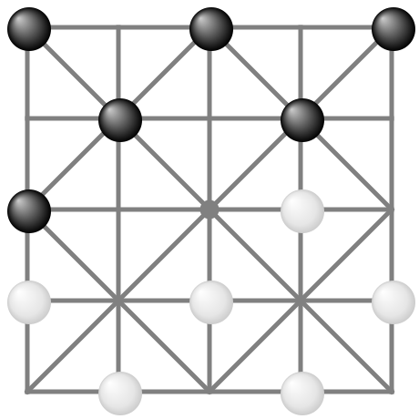

Alquerque (ancient checkers)
Origins

“El Qirkat”, Arabic القرقات, came to medieval Europe via Spain.
In France adapted to chessboard, leading to modern draughts/checkers.
Setup
- 2 Players - 12 pieces each - black / white
- Board has 25 points (where lines meet)
- Initial game board setup as shown
Goal
Capture or lock in all of the opponent’s pieces.
The game ends when a player has no pieces left or cannot make any moves.
Game play
Players take turns, each time using only one of their pieces:
- If possible, capture a single immediately adjacent opposing piece: Jump over it along a straight line, land on the empty point right behind it.
- Your piece may capture additional pieces by doing a sequence of such straight immediate jumps over single pieces, possibly changing directions ("zig-zag").
- Remove captured pieces from the game. If no opposing pieces are left, you win.
- If you cannot capture, move a piece one step along a line to an empty point.
- If you cannot even move any of your pieces, the other player wins.
- Note: It is not allowed to jump over your own pieces.
"End game"
As soon as only 8 pieces are left on the board, the game moves to the inner 3x3 square:
- If any of your pieces is on a point on the edge of the board, you may not play pieces on the inner square.
You must make a move or capture jump from an edge point to one of the 9 inner points of the board.
If that's impossible, skip a turn.
- Nobody may go to any of the 16 edge points anymore, not even temporarily during a jump sequence.
Differences to checkers
- You may jump or move along lines in any direction, including “backwards”.
- There are no “kings”, and no “crowning” when reaching the far end of the board.